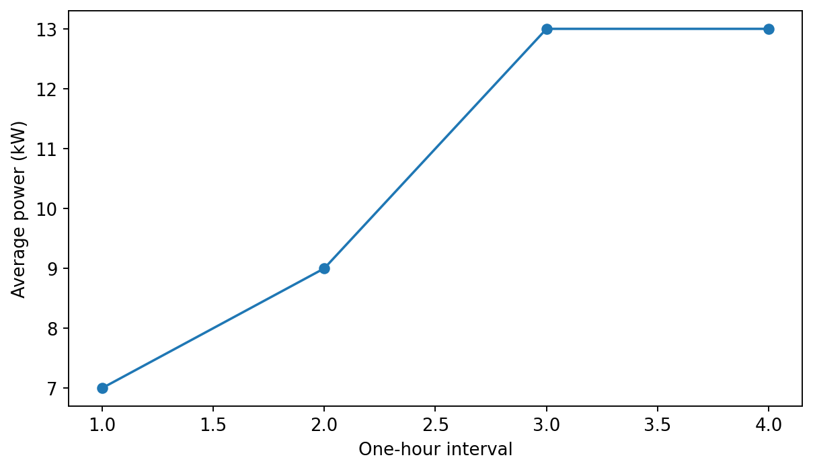
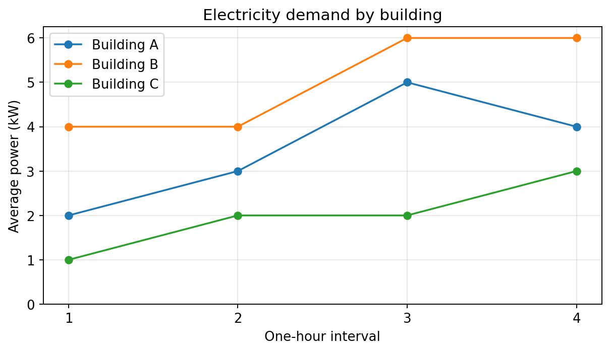
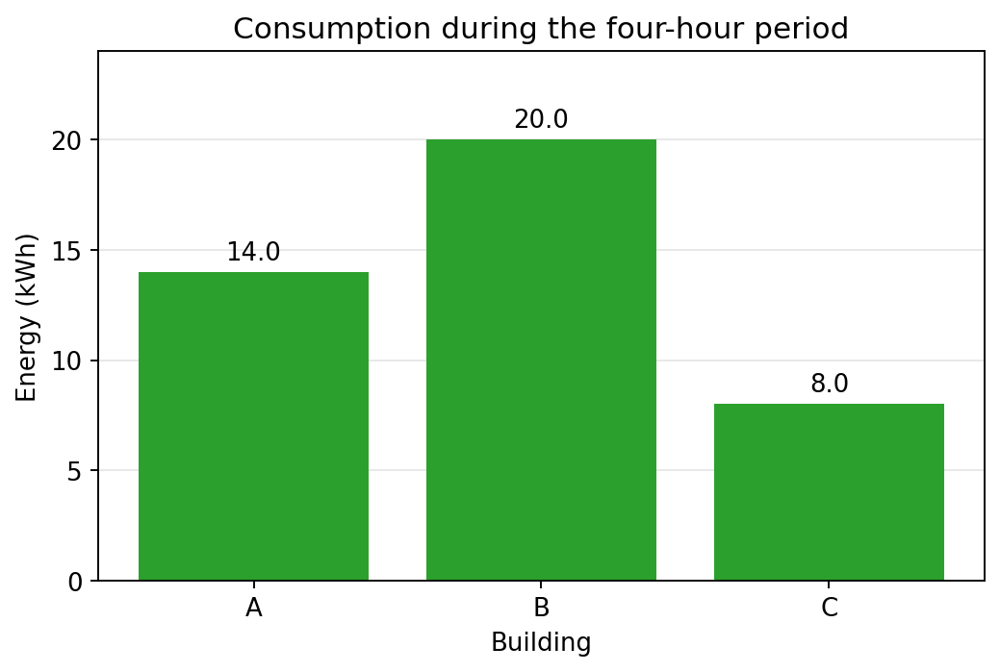
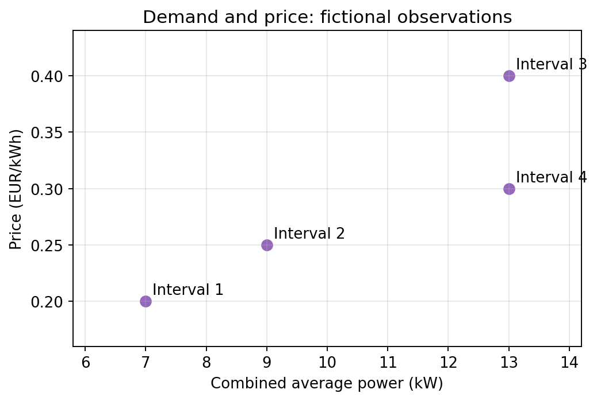
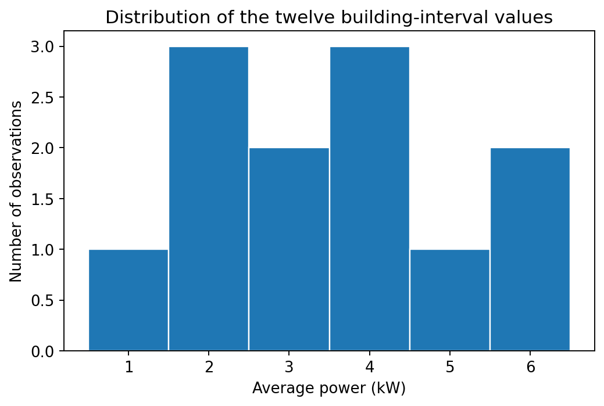
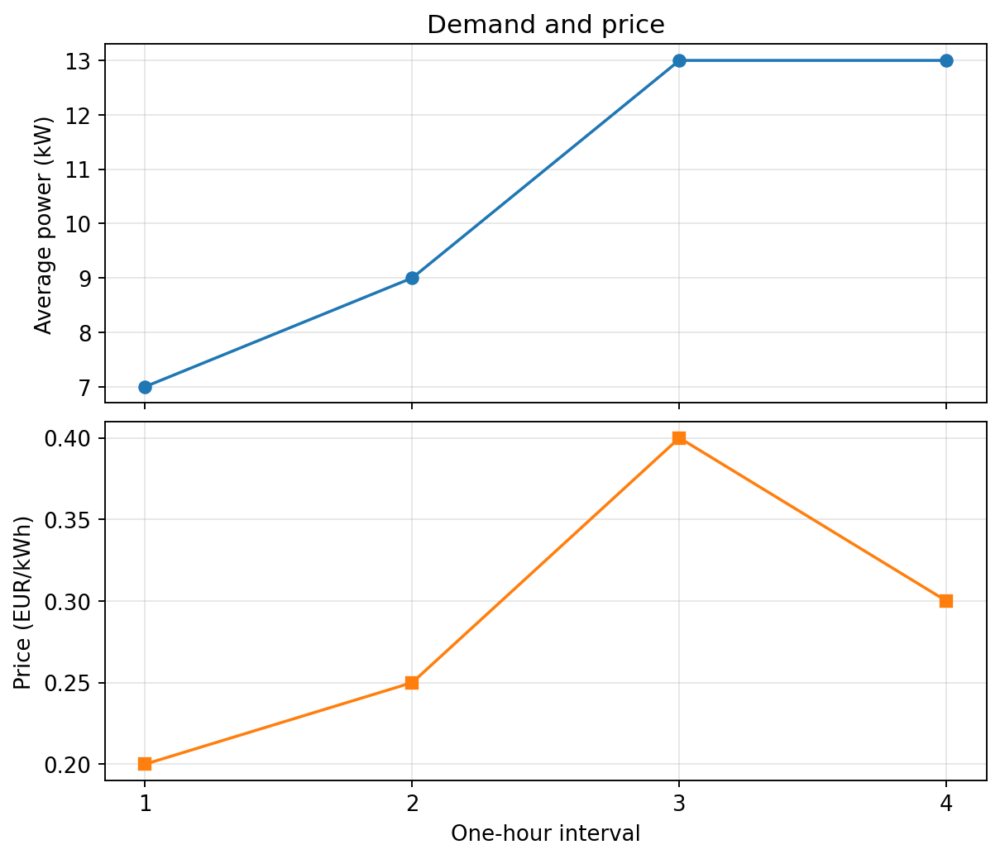
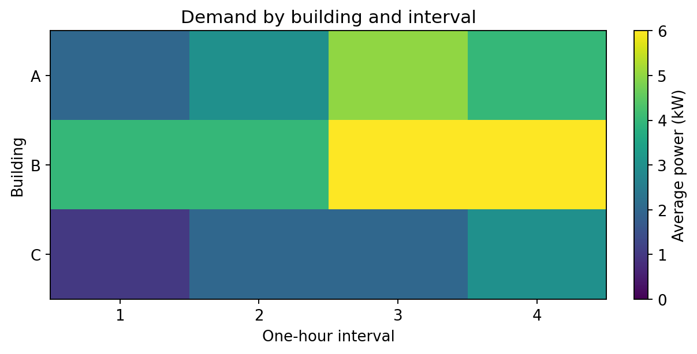

Matplotlib: Communicating Energy Results#

Matplotlib is a plotting library for building and exporting figures. It helps us inspect patterns and communicate results with explicit quantities, units, and scales.
Start with the official quick start and explore the example gallery.
Your task#
Create 04-matplotlib.ipynb. Prepare figures comparing electricity demand and consumption in three fictional buildings. Select a suitable plot for each question, label it clearly, and export a figure for a report.
Complete NumPy first. Select Python (managing-data) as your kernel. All data are recreated below, so this notebook does not depend on variables from another notebook.
Learning objectives#
Distinguish the Figure from its Axes.
Choose line, bar, scatter, histogram, and heatmap plots appropriately.
Add units, legends, annotations, and readable scales.
Arrange several plots within one figure.
Export graphics and explain what a figure can and cannot establish.
Import the libraries and prepare data#
from pathlib import Path
import numpy as np
import matplotlib.pyplot as plt
building_names = ["A", "B", "C"]
demand_kw = np.array([
[2.0, 3.0, 5.0, 4.0],
[4.0, 4.0, 6.0, 6.0],
[1.0, 2.0, 2.0, 3.0],
])
interval_number = np.arange(1, 5)
interval_hours = 1.0
total_demand_kw = demand_kw.sum(axis=0)
building_energy_kwh = (demand_kw * interval_hours).sum(axis=1)
price_eur_per_kwh = np.array([0.20, 0.25, 0.40, 0.30])
Rows represent buildings and columns represent one-hour intervals. Values are average power, not instantaneous measurements.
Figure and Axes#
A Figure contains the whole graphic. An Axes is one plotting area within it, with its own data, title, and coordinate axes.
fig, ax = plt.subplots(figsize=(7, 4), layout="constrained")
ax.plot(interval_number, total_demand_kw, marker="o")
ax.set(xlabel="One-hour interval", ylabel="Average power (kW)")
plt.show()
figsize specifies width and height in inches. layout="constrained" helps accommodate labels. We use explicit fig and ax objects so it is clear which figure each instruction changes.


Fig. 18 Expected figure from the code above, using the fictional building dataset.#
Line plots: compare ordered profiles#
fig, ax = plt.subplots(figsize=(7, 4), layout="constrained")
for name, profile in zip(building_names, demand_kw):
ax.plot(interval_number, profile, marker="o", label=f"Building {name}")
ax.set(title="Electricity demand by building",
xlabel="One-hour interval", ylabel="Average power (kW)",
xticks=interval_number)
ax.set_ylim(bottom=0)
ax.grid(alpha=0.3)
ax.legend()
plt.show()
The lines help compare consecutive interval averages. They do not reveal measurements within each interval. For an interval-based representation, try ax.step(..., where="mid") and consider how its boundaries relate to your time labels.


Fig. 19 Expected figure from the code above, using the fictional building dataset.#
Bar charts: compare categories#
energy_fig, ax = plt.subplots(figsize=(6, 4), layout="constrained")
bars = ax.bar(building_names, building_energy_kwh, color="tab:green")
ax.bar_label(bars, fmt="%.1f", padding=3)
ax.set(title="Consumption during the four-hour period",
xlabel="Building", ylabel="Energy (kWh)")
ax.set_ylim(0, building_energy_kwh.max() * 1.2)
ax.grid(axis="y", alpha=0.3)
ax.set_axisbelow(True)
plt.show()
Bars compare energy totals, whereas the previous plot compares power. Keep a zero baseline for ordinary magnitude comparisons using bar lengths.


Fig. 20 Expected figure from the code above, using the fictional building dataset.#
Scatter plots: inspect paired observations#
fig, ax = plt.subplots(figsize=(6, 4), layout="constrained")
ax.scatter(total_demand_kw, price_eur_per_kwh, s=60, color="tab:purple")
for interval, power, price in zip(interval_number, total_demand_kw, price_eur_per_kwh):
ax.annotate(f"Interval {interval}", (power, price),
xytext=(5, 5), textcoords="offset points")
ax.set(title="Demand and price: fictional observations",
xlabel="Combined average power (kW)", ylabel="Price (EUR/kWh)")
ax.grid(alpha=0.3)
ax.margins(0.20)
plt.show()
Each point pairs demand and price from the same interval. Four invented observations cannot establish a general relationship or causation.


Fig. 21 Expected figure from the code above, using the fictional building dataset.#
Histograms: inspect a distribution#
fig, ax = plt.subplots(figsize=(6, 4), layout="constrained")
ax.hist(demand_kw.ravel(), bins=np.arange(0.5, 7.5, 1),
edgecolor="white", color="tab:blue")
ax.set(title="Distribution of the twelve building-interval values",
xlabel="Average power (kW)", ylabel="Number of observations")
plt.show()
ravel() exposes the values as a one-dimensional array. A histogram groups numerical values into bins; changing bin widths can change the apparent pattern. Here it pools all buildings and intervals, losing their separate identities.


Fig. 22 Expected figure from the code above, using the fictional building dataset.#
Subplots: separate different units#
fig, axes = plt.subplots(2, 1, figsize=(7, 6), sharex=True,
layout="constrained")
axes[0].plot(interval_number, total_demand_kw, marker="o")
axes[0].set(title="Demand and price", ylabel="Average power (kW)")
axes[1].plot(interval_number, price_eur_per_kwh,
marker="s", color="tab:orange")
axes[1].set(xlabel="One-hour interval", ylabel="Price (EUR/kWh)",
xticks=interval_number)
for ax in axes:
ax.grid(alpha=0.3)
plt.show()
Sharing the x-axis aligns time intervals while allowing each quantity its own y-axis and units.


Fig. 23 Expected figure from the code above, using the fictional building dataset.#
Heatmaps: show a two-dimensional array#
fig, ax = plt.subplots(figsize=(7, 3.5), layout="constrained")
image = ax.imshow(demand_kw, aspect="auto", cmap="viridis", vmin=0)
ax.set_xticks(np.arange(4), labels=interval_number)
ax.set_yticks(np.arange(3), labels=building_names)
ax.set(title="Demand by building and interval",
xlabel="One-hour interval", ylabel="Building")
fig.colorbar(image, ax=ax, label="Average power (kW)")
plt.show()
A colour bar explains the values behind the colours. Use identical colour limits when comparing heatmaps so equal colours represent equal quantities.


Fig. 24 Expected figure from the code above, using the fictional building dataset.#
Export a figure#
output_directory = Path("outputs")
output_directory.mkdir(exist_ok=True)
energy_fig.savefig(output_directory / "building_energy.png",
dpi=300, bbox_inches="tight")
energy_fig.savefig(output_directory / "building_energy.svg",
bbox_inches="tight")
The explicit energy_fig reference saves the bar chart, regardless of which plot was created most recently. PNG stores pixels; SVG preserves vector elements such as lines and text. Paths are relative to the notebook’s working directory.
Optional practice#
Compare a scenario#
Reduce building A by 15% and building B by 5%, leaving C unchanged. Plot original and modified combined demand. Explain that the reductions are assumptions.
Choose a visual representation#
Create a bar chart of costs by building. Add labels and units. Explain why a line joining building names would suggest an ordering that may have no meaning.
Check presentation choices#
Change a heatmap’s limits and a histogram’s bins. Describe how the appearance changes even though the data remain unchanged.
Prepare a report figure#
Create two subplots: power profiles and energy totals. Export them and check readability at the size you intend to use in a report.
Check your work#
Restart the kernel and run all cells. Confirm that units, legends, and output filenames describe the correct quantities. Distinguish fictional examples from real measurements.